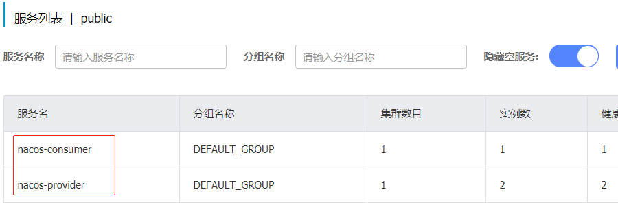
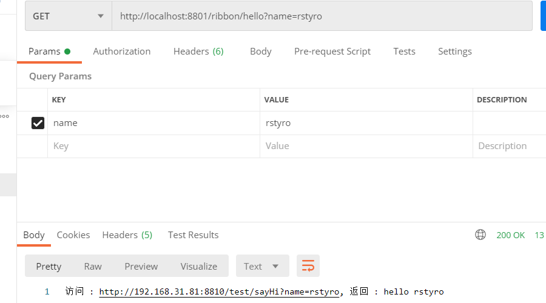

一、版本说明
我觉得有必要介绍Spring-cloud-alibaba与Springcloud的版本关系。
1、毕业版本依赖关系
| SpringCloud Version | SpringCloud-Alibaba version | SpringBoot Version |
|---|---|---|
| Spring Cloud Hoxton.SR8 | 2.2.3.RELEASE | 2.3.2.RELEASE |
| Spring Cloud Greenwich.SR6 | 2.1.3.RELEASE | 2.1.13.RELEASE |
| Spring Cloud Hoxton.SR8 | 2.2.2.RELEASE | 2.3.2.RELEASE |
| Spring Cloud Hoxton.SR3 | 2.2.1.RELEASE | 2.2.5.RELEASE |
| Spring Cloud Hoxton.RELEASE | 2.2.0.RELEASE | 2.2.X.RELEASE |
| Spring Cloud Greenwich | 2.1.2.RELEASE | 2.1.X.RELEASE |
| Spring Cloud Finchley | 2.0.3.RELEASE | 2.0.X.RELEASE |
| Spring Cloud Edgware | 1.5.1.RELEASE(停止维护，建议升级) | 1.5.X.RELEASE |
2、孵化版本依赖关系（不推荐使用）
| SpringCloud Version | SpringCloud-Alibaba version | SpringBoot Version |
|---|---|---|
| Spring Cloud Greenwich | 0.9.0.RELEASE | 2.1.X.RELEASE |
| Spring Cloud Finchley | 0.2.X.RELEASE | 2.0.X.RELEASE |
| Spring Cloud Edgware | 0.1.X.RELEASE | 1.5.X.RELEASE |
孵化版本肯定是不推荐使用的，但是网上很多资料都是以孵化版本来讲的。
二、Nacos服务注册与发现
本文的SpringCloud-Alibaba版本是：2.2.3.RELEASE 算是写本文的最新版本。
1、启动Nacos
Nanos的安装与使用，上篇讲过了。
2、引入依赖
再pom.xml中添加依赖springcloud-alibaba的主版本。
<dependencyManagement> |
然后再引入 nacos服务发现依赖：
<dependency> |
也就说引入两个依赖，即可实现Nacos的服务发现。如果需要注册服务，如：在Springboot的启动来上使用注解：@EnableDiscoveryClient即可。
为了更直观的看到效果，我们创建一个消费者和生产者的项目来测试。
三、创建消费者和生产者
提供者和消费者的代码都是一个SpringBoot 应用。
1、生产者
生产者也就是服务的提供者。
第一步
新建一个SpringBoot项目,在生成Springboot依赖的基础上，在加入依赖：
<dependencyManagement> |
第二步
配置nacos的配置，在application.yml添加
spring: |
上面一个是配置nacos 地址，还有配置生产者的服务名称为：nacos-provider。
第三步
想Nacos注册服务，在启动类ProviderApplication上添加注解@EnableDiscoveryClient。
@EnableDiscoveryClient |
第四步
创建一个controller,并添加一个接口
|
重要内容都标出来了。查询所有代码内容底下有Github地址。
2、消费者
- 1、消费者的代码前3步和上面的生产者是一样的
- 2、记得修改消费者的服务名称：
spring.application.name=nacos-consumer，这个和provider不一样就可以了。 - 3、然后第四步不一样是因为我们要去请求（调用或者说访问）生产者（provider）。访问的方式有很多种，下面介绍几种常用的。
2.1、Feign调用
首先需要添加其依赖：
<dependency> |
feign 调用应该是挺常用的吧，创建一个feign客户端：NacosProviderFeignClient(名字随便取)。
@FeignClient("nacos-provider") |
然后再Controller进行调用
/** |
2.2、RestTemplate调用
spring提供了一种简单便捷的模板类来进行操作，这就是RestTemplate。
|
使用@LoadBalanced使他具有负载均衡的作用，可以看看LoadBalancerAutoConfiguration，有个restTemplateCustomizer()定制器,在其中加入了负载均衡拦截器LoadBalancerInterceptor。在其中调用的是：LoadBalancerClient 接口.这个下面会讲。最终调用的还是Ribbon的实现类。
2.3、Ribbon调用
这种是直接使用LoadBalancerClient 调用。
("/ribbon") |
我们知道LoadBalancerClient的接口自由一个实现类：RibbonLoadBalancerClient。这个一看名称就知道和Ribbon有关，源码有兴趣可自行研究。
2.4、WebClient调用
首先添加其依赖：
<dependency> |
WebClient是Spring 5中最新引入的，可以将其理解为reactive版的RestTemplate。
|
自此重要代码都写好了，来测试一下。
四、测试消费者与生产者
为了实现负载均衡，生产者（提供者，name=nacos-provider）分别以：8810、8811端口启动，消费者(name=nacos-consumer)以8801端口启动。

请求接口：
# feign请求 |

在我们请求的时候，客户端是以轮询的方式请求生产者，实现一个负载均衡的操作。
1、完整代码
- Github:https://github.com/rstyro/SpringCloud-Alibaba-learning
- Gitee:https://gitee.com/rstyro/SpringCloud-Alibaba-learning